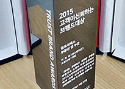

'모바일 부동산 앱 ‘다방’ , 2015 대한민국 고객만족브랜드대상 수상'
'손 하나로 방 찾는 모바일 부동산 어플리케이션 ‘다방’(www.dabangapp.com)이 ‘2015 대한민국 고객만족브랜드 대상’ 부동산 앱 부분에서 대상을 수상했다 ‘2015 대한민국 고객만족브랜드대상’은 고객 만족을 우선하는 경영 방침과 경영 전략, 지속적인 연구·개발(Rundefined소비자의 만족을 높이는 서비스와 상품을 갖춘 브랜드를 인증하는 상이다.'

'앱서비스부문 작년에 이어 2년 연속 수상. 기술혁신, 정보력 바탕으로 고객 신뢰 구축'
'스테이션3의 모바일 부동산앱 다방(대표 한유순·www.dabangapp.com)이 ‘2015 고객이 신뢰하는 브랜드대상’ 앱서비스부문 2년 연속 대상을 수상했다. 다방은 전국의 원룸, 투룸, 오피스텔 등 전·월세 부동산 매물을 직접 검색하고 필요할 경우 직접 매물을 등록해 광고할 수 있는 모바일 어플리케이션이다.'
'[2015 프리미엄브랜드대상] 방 구하기 앱, 다방'
'모바일 방구하기 어플리케이션 다방(www.dabangapp.com)이 5월 19일 서울 강남구 역삼동 삼정호텔에서 열린 여성소비자가 뽑은 ‘2015 프리미엄브랜드 대상’ 시상식에서 정보서비스(부동산앱) 부문 대상을 받았다. 다방은 부동산 매물 검색은 물론 자신이 찍은 방 사진을 올려 직접 광고할 수 있는 최초 오픈형 부동산 플랫폼이다.'